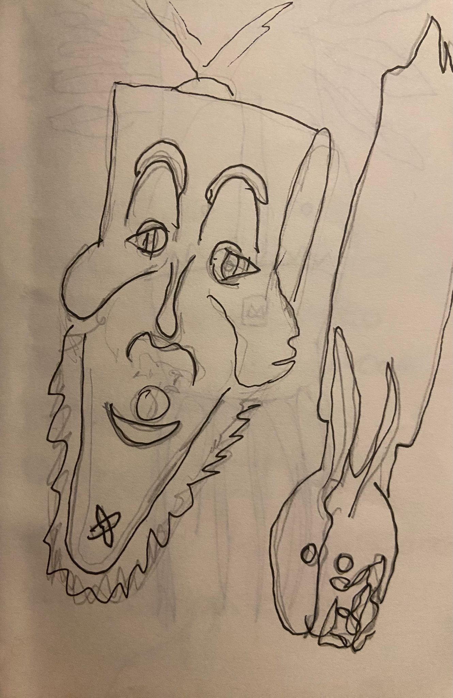
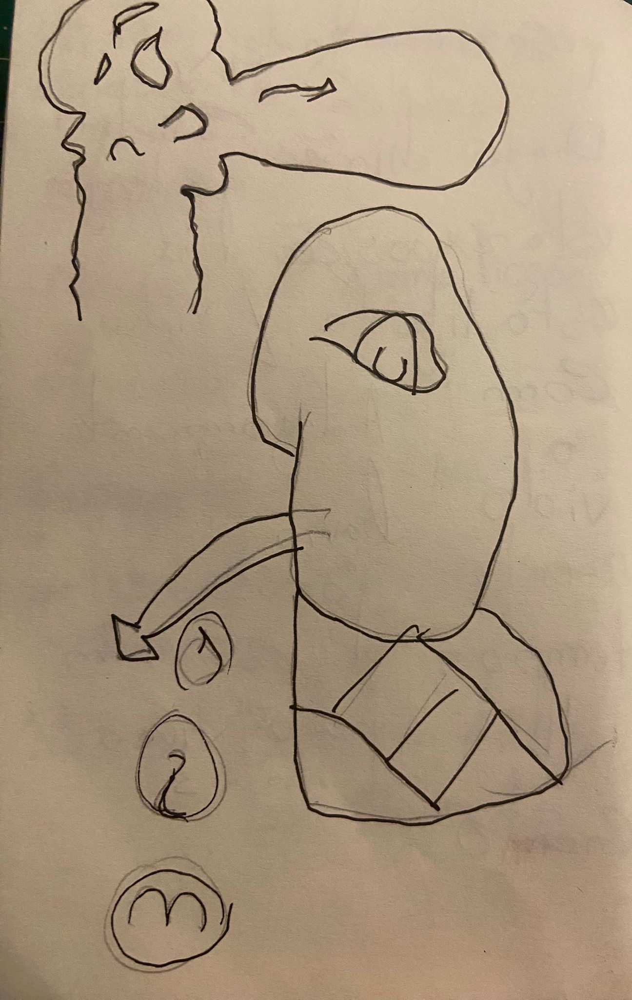
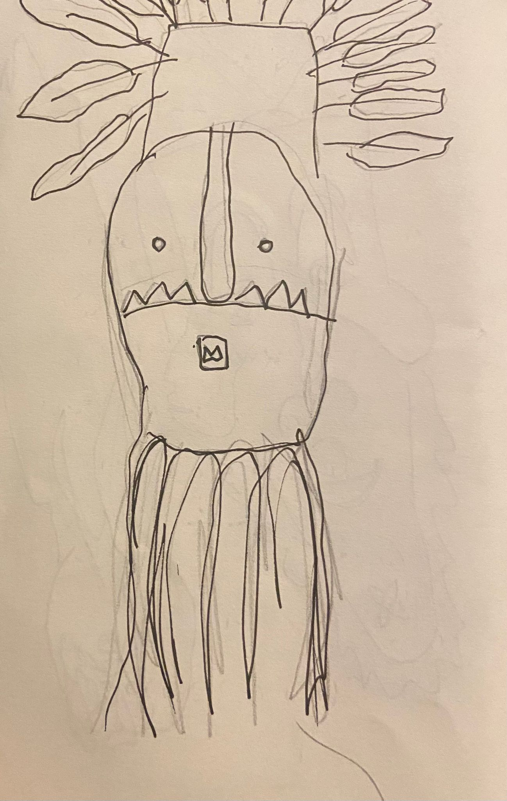

Visita 1: Visita ao Centro Internacional das Artes José de Guimarães (CIAJG)
Este relatório explora a obra de José de Guimarães, um dos artistas plásticos mais influentes de Portugal, cuja prática artística se destaca pela rica interconexão entre diversas culturas.
Ver Relatório Completo





Visita 2: Visita ao ateliê do Coletivo Madrôa – fábrica abandonada de couro
Este relatório explora a trajetória de José Teibão, um artista cuja dedicação à arte se destaca como forma de expressão e terapia pessoal. Nascido em Guimarães e licenciado em Microbiologia, Teibão construiu um caminho singular nas artes, enfrentando desafios financeiros e atuando em diversas áreas para sustentar sua prática artística.
Ver Relatório CompletoVisita 3: Aula com Miguel Ângelo Marques
Este relatório apresenta a experiência com o artista Miguel Ângelo Marques, que conduziu uma aula enriquecedora no dia 10 de outubro, seguida por uma visita guiada à exposição CONTEXTILE, realizada no CIAJG em Guimarães.
Ver Relatório Completo